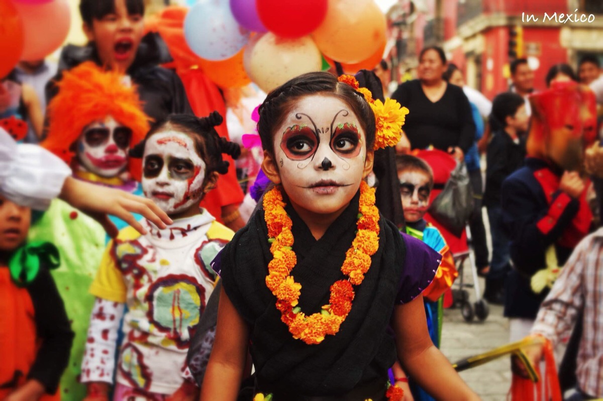

|  | ||||
| 首页 | 由来 | 习俗 | 饮食 | 相关作品 |
| 亡灵节（西班牙语：Día de Muertos）类似中元节，家人和朋友团聚在一起，为亡者祈福。在墨西哥，亡灵节是一个重要的节日。庆祝活动时间为11月1日和2日，与天主教假期万圣节（11月1日）和万灵节（11月2日）相同。传统的纪念方式为搭建私人祭坛，摆放有糖骷髅、万寿菊和逝者生前喜爱的食物，并携带这些物品前往墓地祭奠逝者。 据学者研究，这个现代墨西哥节日起源可以追溯到几百年土著纪念活动和一个阿兹台克人献给女神米克特卡西瓦特尔的节日。在巴西，亡灵节是公众假期，很多巴西人拜访墓地和教堂来庆祝这个节日。在西班牙，举行节日和游行，并在一天结束时，人们聚集在公墓为他们死去的亲人祈祷。在欧洲其他地方也有类似的纪念活动，许多亚洲和非洲文化中亦有类似主题的庆祝活动。根据阿兹特克历法，一月有20天的两个连续月份的名称是“Miccailhuitomi”和“Miccaihuitl”，可译为“幼灵节”和“成灵节”。两月在一起，看起来就形成了一个对死者的长期庆典活动。16世纪早期，西班牙征服了阿兹特克帝国，占领了现在的墨西哥区域。鉴于宗教与政治原因，他们强迫土著居民改信天主教。传教士引入的节日包括了“诸圣节”和“万灵日”，分别是11月1日和2日。土著居民在这两个节日中融入了自己的传统文化，用于纪念死者。于是亡灵节就成了这两个节日独一无二的混合产物。 |
||||